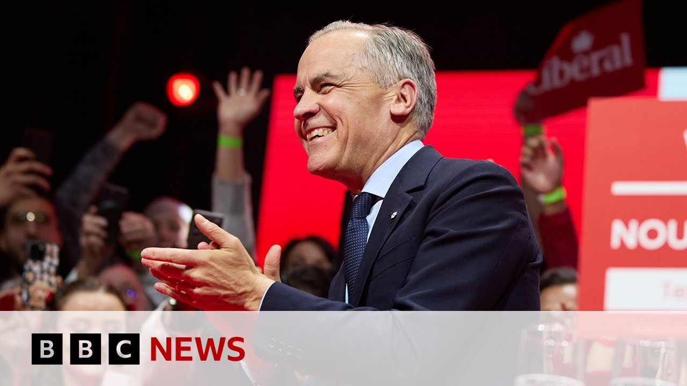

来B站一起耍【Global每日英语简报】
【马克·卡尼赢得加拿大选举，承诺“特朗普永远不会击垮我们” | BBC新闻】
Summary: Canada's Prime Minister Mark Carney has won a historic election, addressing threats from the US under Trump, while uniting a divided nation and facing potential challenges in forming a majority government.
摘要： 加拿大总理马克·卡尼赢得历史性选举，直面特朗普领导下美国的威胁，团结分裂的国家，并面临组建多数政府的潜在挑战。

⏱️ Estimated Reading Time: 13 min
Canada's Prime Minister Mark Carney has declared victory in the country's general election seen as one of the most consequential in its history.
加拿大总理马克·卡尼宣布在该国历史上最具影响力的选举中获胜。
After his win, Mark Carney addressed directly what many Canadians see as an almost existential threat posed by their North American neighbor.
获胜后，马克·卡尼直接回应了许多加拿大人视为生存威胁的北美邻国问题。
First though, here's the moment that the Liberals realized their party had won the election.
首先，这是自由党意识到他们赢得选举的时刻。
The Liberal Party were well behind in the polls just three months ago, but that was before Carney replaced Justin Trudeau as leader and US President Donald Trump upended relations and became the defining issue of the campaign.
自由党三个月前在民调中大幅落后，但这是在卡尼取代贾斯汀·特鲁多成为领导人以及美国总统唐纳德·特朗普颠覆两国关系并成为竞选核心问题之前。
So, here's Mr. Carney's victory speech in which he directly addresses what he calls America's betrayal.
以下是卡尼先生的胜选演讲，他直接谈及他所谓的“美国的背叛”。
As I've been warning for months, America wants our land, our resources, our water, our country.
正如我数月来所警告的，美国想要我们的土地、资源、水和国家。
Never.
绝不可能。
But these are not these are not idle threats.
但这些并非虚张声势的威胁。
President Trump is trying to break us so that America can own us.
特朗普总统试图击垮我们，让美国占有我们。
That will never that will never ever happen.
这永远、永远不会发生。
But we But we also must recognize the reality that our world has fundamentally changed.
但我们也必须承认，我们的世界已根本改变。
There is also for me as I stand before you this evening humility in recognizing that while many have chosen to place your trust in me, trust in the Liberal Party.
今晚站在你们面前，我怀着谦卑之心认识到，尽管许多人选择信任我和自由党。
Millions of our fellow citizens preferred a different outcome.
数百万同胞更希望另一种结果。
And my message to every Canadian is this.
我要对每位加拿大人说的是：
No matter where you live, no matter what language you speak, no matter how you voted, I will always do my best to represent everyone who calls Canada home.
无论你住在哪里，说什么语言，投票给谁，我将竭尽全力代表所有以加拿大为家的人。
Now, although Mark Carney's Liberal Party have won, it still remains too close to call whether he'll secure a majority in parliament.
尽管马克·卡尼的自由党获胜，但能否赢得议会多数席位仍难定论。
If not, he'll have to rely on other parties to govern.
若未获多数，他将依赖其他政党执政。
In his concession speech, the leader of the opposition Conservative Party, Pierre Polyv, congratulated Mr. Dani, but also made clear that he wouldn't abandon his electoral base.
保守党领袖皮埃尔·波利夫在败选演讲中祝贺卡尼，但也明确表示不会放弃他的选民基础。
We hear your stories.
我们听到你们的故事。
We will carry those stories with us into parliament.
我们将把这些故事带入议会。
We will not forget the people for whom we work and for whom we fight every day.
我们不会忘记为之工作和每日奋斗的人民。
Now, I know that some of you might be disappointed that change did not get over the finish line tonight.
我知道有些人可能因变革今晚未能实现而失望。
Change takes time.
变革需要时间。
Most of all, it requires that we never give up because our people and our country are worth fighting for.
最重要的是，我们必须永不放弃，因为我们的人民和国家值得奋斗。
Well, our chief international correspondent, Lee Ducet, is in Ottawa and she gave us a sense of what was happening.
我们的首席国际记者李·杜塞在渥太华为我们解读现场情况。
What an extraordinary moment in Canadian political history.
这是加拿大政治史上非凡的时刻。
The Liberal Party, which only months ago was trailing in the polls by double digits, led by a prime minister, a former banker who until months ago had no political experience, has surged ahead in these polls, winning the Liberals a fourth year in office.
自由党数月前民调还落后两位数，由一位数月前尚无政治经验的前银行家总理领导，如今民调飙升，为自由党赢得连续第四年执政。
And Mark Carney uh the mandate to be the next prime minister of Canada.
马克·卡尼获得成为加拿大下任总理的授权。
and what unthinkable turnaround.
这是难以想象的逆转。
And it is a measure of this moment, an election where the person whose name wasn't on the ballot, President Donald Trump, transformed Canada's political landscape.
这标志着本次选举的特殊性——未出现在选票上的唐纳德·特朗普总统改变了加拿大政治格局。
Not just the swinging tariffs he's imposed, but also the continuing threat to turn Canada into the 51st state has galvanized Canadians have caused some Canadians to change their vote usual voting loyalties in order to put in charge of this country a 60-year-old economist and former banker who they believe is the man to solve the crisis of their lifetime.
不仅是他实施的摇摆关税，还有将加拿大变成第51个州的持续威胁，激励加拿大人改变往常投票倾向，选择一位60岁的经济学家和前银行家领导国家，他们认为他能解决此生最大的危机。
That's how Mark Carney put it in his victory speech.
马克·卡尼在胜选演讲中如此表述。
Though, while he thanked all of his supporters, he also mentioned several times that he would be the prime minister for all Canadians, recognizing that there were millions who didn't vote for him.
尽管他感谢所有支持者，也多次提到将成为全体加拿大人的总理，承认数百万人未投票给他。
His main challenger, Pierre Pyv, of the Conservatives, still did extraordinarily well in this poll, still got a very high percentage of the popular vote.
他的主要对手保守党的皮埃尔·波利夫在民调中表现优异，仍获得很高得票率。
Mark Carney knows that that is going to be something he's going to have to contend with.
马克·卡尼明白这将是他必须应对的问题。
So he mentioned this and he also mentioned of course repeatedly the need to take on that threat from across the border.
因此他提及此事，也反复强调需应对来自边境的威胁。
But he will have to deal with the problems from within as well.
但他还需处理国内问题。
So he may soon find out that while he's set himself up as a problem solver, that the problems and crises confronting a banker are of a totally different order in many ways than those confronting a prime minister who has to be accountable to to the people and to a country which has its own internal barriers to trade and its own longstanding regional tensions which at times have threatened to pull this country apart.
他可能很快发现，尽管自诩问题解决者，但银行家面临的危机与总理面临的挑战截然不同——后者需对人民和国家负责，而加拿大存在内部贸易壁垒和长期地区紧张，这些曾多次威胁国家分裂。
Le deset there in Ottawa.
李·杜塞在渥太华的报道。
Let's pick up on some of what Lee was saying there with Dr. Graeme Young, head of social and public policy at the University of Glasgow.
让我们连线格拉斯哥大学社会与公共政策负责人格雷姆·杨博士，进一步探讨李的观点。
And Dr. Young, you're also an expert in Canadian politics.
杨博士，您也是加拿大政治专家。
What a difference three months make?
三个月带来的变化有多大？
How much of this do you think?
您认为多少是
Is it the Carney effect replacing Justin Trudeau or how much is it Donald Trump?
卡尼效应取代贾斯汀·特鲁多的影响，还是唐纳德·特朗普的作用？
Can you even quantify it?
能否量化？
No, I think that's difficult to quantify.
我认为难以量化。
I think that this election was very much looking like it was going to be about cost of living, about the cost of h housing, about grocery bills being high, all of these things that we are seeing across the rich world at the moment.
本次选举原本可能围绕生活成本、住房价格和食品开支等富裕国家普遍面临的问题。
Donald Trump came in and Donald Trump changed that.
特朗普的介入改变了这一切。
Uh, as you said, Donald Trump started making threats to Canada's sovereignty.
如您所言，特朗普开始威胁加拿大主权。
Canada has of course entered a trade war against Donald Trump or against the United States and uh Justin Trudeau our prime minister had become very unpopular and and has stepped down.
加拿大当然与特朗普或美国展开了贸易战，而总理贾斯汀·特鲁多支持率大跌并辞职。
Basically what we have seen in this election is the most dramatic swing in modern Canadian political history.
本次选举见证了现代加拿大政治史上最剧烈的逆转。
The Liberal Party was 24 points down just a few months ago and a few weeks ago they were about six or seven points up.
自由党数月前还落后24个百分点，几周前已领先6到7个百分点。
It looks like with the election they were about two points up now and we're just waiting to see if they will be able to form a majority government or have another minority.
目前选举中他们领先约2个百分点，我们正等待观察其能否组建多数政府或再次成为少数政府。
So if if they don't secure enough to form a majority government, what happens?
若未获足够席位组建多数政府，会怎样？
Which parties do they have to rely on?
需依赖哪些政党？
So they'll have to rely on the New Democratic Party, the NDP, which is the third largest party in Canada, our social democratic party.
他们将依赖加拿大第三大党新民主党，我们的社会民主党。
The last government the Liberals had under Justin Trudeau, they had an agreement with the New Democratic Party where they relied on the New Democratic Party for votes.
上届特鲁多领导的自由党政府与新民主党达成协议，依赖其投票支持。
The New Democratic Party used that to get through legislation on pharmarmacare, so prescription drugs, and on dental care.
新民主党借此通过全民药保和牙科护理立法。
The New Democratic Party's argument throughout this election has essentially been, you want us in the room to get similar progressive policies in the future.
新民主党本次选举的核心论点是：需要他们在场以推动未来类似进步政策。
The New Democratic Party has seen a very large share of their voters move to the Liberal Party to try to keep out Polyv and to try to keep out the Conservative Party.
新民主党大量选民转投自由党以阻止波利夫和保守党。
So, their bargaining power is significantly less than it used to be.
因此其议价能力大不如前。
But the Liberals still need four more seats to get to a majority and the NDP have seven.
但自由党仍需4席才能获多数，而新民主党拥有7席。
So, they do hold the cards here.
因此他们仍掌握关键筹码。
Is is it the end of the NDP?
这是新民主党的终结吗？
Arguably, we saw its leader uh announce that he will be standing down.
可以说，我们看到其领袖宣布辞职。
Uh Jagmeat Singh saying in a quite an emotional speech that he'll be standing down.
贾格米特·辛格在情绪激动的演讲中表示将卸任。
Is that it for them?
他们就此终结了吗？
Um, well, you never know what happens in politics, and I think in Canada, we've really seen that in the last few months.
政治永远充满变数，加拿大过去几个月正印证这点。
I think the NDP certainly does need to go in a new direction.
新民主党确实需要新方向。
Their uh message was certainly not resonating with voters this time around, it seemed.
本次选举中他们的主张似乎未引起选民共鸣。
However, this election was so exceptional with Donald Trump, with the threat posed by the United States, and with what a lot of NDP voters saw as the threats posed by the Conservative Party under Pierre Polyv.
但本次选举因特朗普、美国威胁及许多新民主党选民视波利夫领导的保守党为威胁而极为特殊。
If those factors are taken out, then they might be able to rebound, but they probably do need to improve their messaging as well.
若排除这些因素，他们或能反弹，但也需改进宣传策略。
And those initial concerns that Mark Carney hadn't been elected, obviously he was elected as the Liberal leader, but he hadn't won a a public election.
最初对马克·卡尼未经民选（虽当选自由党领袖但未经历大选）的担忧。
All of that goes away now given this uh this remarkable victory.
鉴于这次非凡胜利，这些担忧都已消散。
It does certainly.
确实如此。
I think that actually played into his favor a bit.
我认为这反而对他有利。
He essentially pitched himself as a man for crisis, someone who helped Canada through the global financial crisis, someone who helped the UK through Brexit.
他将自己定位为危机处理者——曾助加拿大度过全球金融危机，帮英国应对脱欧。
Basically, his argument was, I can solve these problems.
他的核心论点是：我能解决这些问题。
I may not be an elected politician.
我或许不是民选政治家。
My opponent has spent his life in politics.
对手毕生从政。
He doesn't know how to solve these.
他却不知如何解决这些。
So, I think he got a lot of credit u to be able to do that.
因此他获得很多信任分。
And if he did have any slips along the way, a lot of people were very understanding.
即便中途有失误，许多人也很包容。
Dr. Graeme Young, expert in Canadian politics.
加拿大政治专家格雷姆·杨博士。
Great to get your analysis.
感谢您的分析。